A Generative Partially Specified Finite State Machine Approach to Complex Behaviour Planning
Abstract
Autonomous robots operating in dynamic environments require behaviour planning systems that combine reactivity, interpretability, and adaptability. While Large Language Models (LLMs) have been successfully integrated with Behaviour Trees (BTs) for dynamic replanning, Finite State Machines (FSMs)—despite their widespread adoption and computational efficiency—remain unexplored for generative approaches. We propose a Generative Partially Specified Finite State Machine (GPSFSM) neurosymbolic architecture that utilises the symbolic and semantic structure of FSMs, including states and event-triggered transitions, to implement Behaviour Planning. This paper introduces the first GPSFSM framework for robotics, featuring Fabric, an FSM engine that parses, validates, and executes behaviour plans that contain Sequential, Recovery, Parallel-Any, and Parallel-All control structures. We extend the Capabilities2 package in ROS2 with an asynchronous event system for behaviour chaining and runtime parameter injection for configurable execution, addressing the ad-hoc function representations that limit current generative systems. PromptTools provides a unified ROS 2 interface to local and cloud LLMs, with prompt buffering, enabling dynamic asynchronous composition of task and context information. Together, these components enable standardised semantic capability descriptions for robot-agnostic development. Experimental evaluation on navigation tasks demonstrates that our GPSFSM approach achieves consistently higher plan-generation success rates than the state-of-the-art BTGenBot system, particularly excelling in zero-shot scenarios where BTs typically struggle, while maintaining comparable or lower planning latency to frontier LLMs. We also demonstrate that our system can generate complex behaviour through experiments. We release an open-source ROS2 stack that makes generative FSM planning practical and reproducible for robotic systems.
Based on existing systems and the literature, we identify the following as the minimum requirements for generative behaviour planning using BTs, FSMs, or other approaches.
- A textual description of the robot's functionalities.
- A textual representation of the behaviour composition based on the robot's functionalities.
- Functionality to coordinate with LLMs to generate the textual representation.
- Functionality to execute the behaviours as described in the textual representation.
We selected Capabilities2 as our base system because it supports loading and unloading its Runners, which are its basic building blocks, from memory. Its Interface and Provider files also fulfil the first requirement. We augmented the Capabilities2 framework with an Event subsystem and parameter-based instantiation to emulate FSM behaviour and fulfil the fourth requirement.
To fulfil the second requirement, we propose Fabric, a system that supports parsing, validation, and conversion of a Behaviour Plan into Capabilities2-compatible instructions.
To fulfil the third requirement, we present PromptTools, a ROS 2 package that interfaces LLMs with the ROS 2 ecosystem via a standard ROS 2 service interface, along with Runners for Fabric and Capabilities2 that can be used for generative functionality.
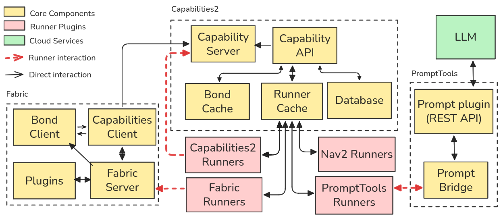
System architecture linking Fabric, Capabilities2, PromptTools, and external LLM services.

Plan definition

Graph view

Runner view
Three related views of the same generated plan: the XML definition, the graph-level structure, and the runner-level execution mapping.
Each of the three systems — Fabric, Capabilities2, and PromptTools — addresses specific requirements for generative behaviour planning.
-
Fabric is responsible for parsing, validating, and converting behaviour plans into executable instructions.
Fabric -
Capabilities2 provides the execution framework with event handling and parameter injection.
Capabilities2 -
PromptTools interfaces with LLMs to generate the necessary textual representations of behaviours.
PromptTools
These systems can be set up independently or in combination, depending on the specific needs of the robotic application. We provide Devcontainers for each system to facilitate easy setup and deployment for both ROS 2 Humble and ROS 2 Jazzy.
To complete the generative framework, we provide Capability Runners for Fabric, Capabilities2, and PromptTools that are used during the plan generation and execution process.
-
Fabric Capabilities is used to load new behaviour plans into the system.
Fabric Capabilities -
Capabilities2 Runner supports new behaviour plan generation and contains internal runners for control flow handling.
Capabilities2 Runner -
Prompt Capabilities provides capabilities for interacting with the PromptTools stack, allowing information gathering and new behaviour plan generation. It also includes behaviour plans for testing these capabilities.
Prompt Capabilities
We also provide Capability Runners for the Nav2 and Perception stacks, which allow the generation of plans compatible with robotic navigation and perception tasks. These stacks can be customized to match the specific requirements of the robotic platform and the task at hand.
-
Perception provides vision and audio functions to the robot along with secondary functions such as image analysis, transcription, and speech synthesis.
Perception -
Perception Capabilities provides capabilities for interacting with the Perception stack. It also includes execution plans to test these capabilities.
Perception Capabilities -
Nav2 Capabilities provides capabilities for interacting with the Nav2 stack, which allows the generation of plans compatible with robotic navigation tasks. It also includes behaviour plans.
Nav2 Capabilities
We use TurtleBot 4 during our experiments. We therefore also provide Capability Runners for the TurtleBot 4 stack, which allow the generation of plans compatible with the TurtleBot 4 robotic platform in both simulation and on the real robot.
-
TurtleBot 4 Capabilities provides custom configuration used by the capabilities for TurtleBot 4, including configuration for the Nav2 and Perception stacks. It also includes behaviour plans used in the evaluation of this paper.
Turtlebot4 Capabilities
Supported Control Patterns

Sequential control for ordered execution.

Recovery control for fallback behaviour after failure.

Parallel-any and parallel-all coordination through internal runners.
"S" is success event, "F" is failure event, and "OnStart" is the event triggered at the beginning of execution.
Plan generation example
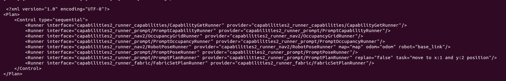
This plan collects the data from the robot and prompts an LLM through Prompt Tools to generate a new plan to achieve a specific goal.
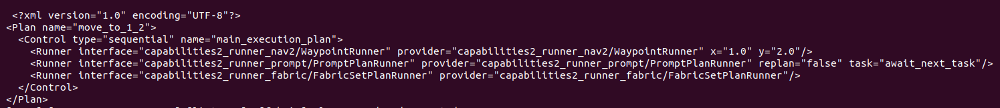
This is the response plan generated by the LLM.
We use TurtleBot 4 during our experiments, in both simulation and on the real robot.
-
In Experiment 1, we use simulation to evaluate the performance of our GPSFSM approach against the state-of-the-art BTGenBot system.
Read Source code, results and documentation -
In Experiment 2 we demonstrate the capabilities of our system in a real-world scenario using TurtleBot 4.
Read Source code, results and documentation
Experiment 1
Task 1 shows a simple waypoint navigation rollout, paired executing fabric with the aggregate success, failure, and latency summary across evaluated models and prompting modes.
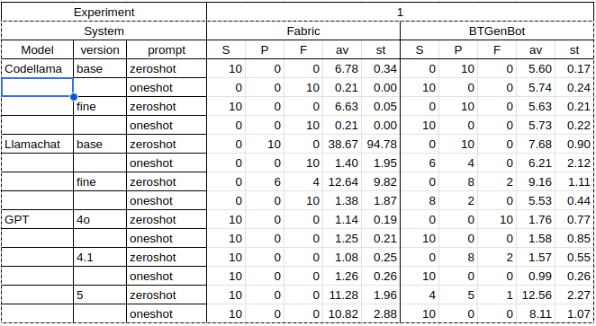
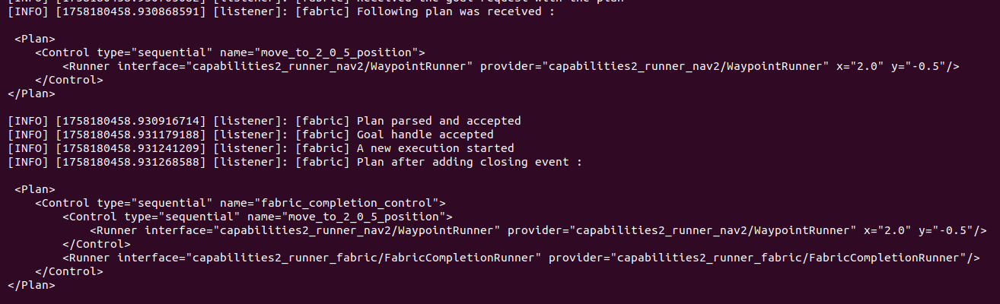
Task 2 extends the navigation sequence and pairs the execution trace with the corresponding benchmark table for each model and prompt condition.
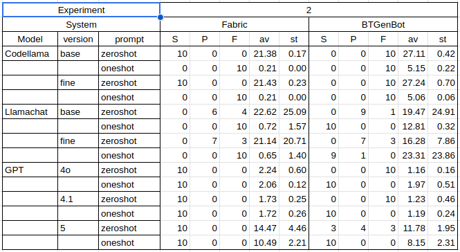
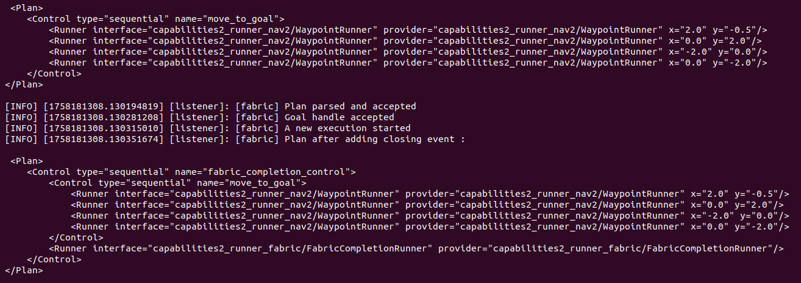
Task 3 highlights a more failure-prone scenario, with the rollout video shown alongside the per-model outcome and timing summary.
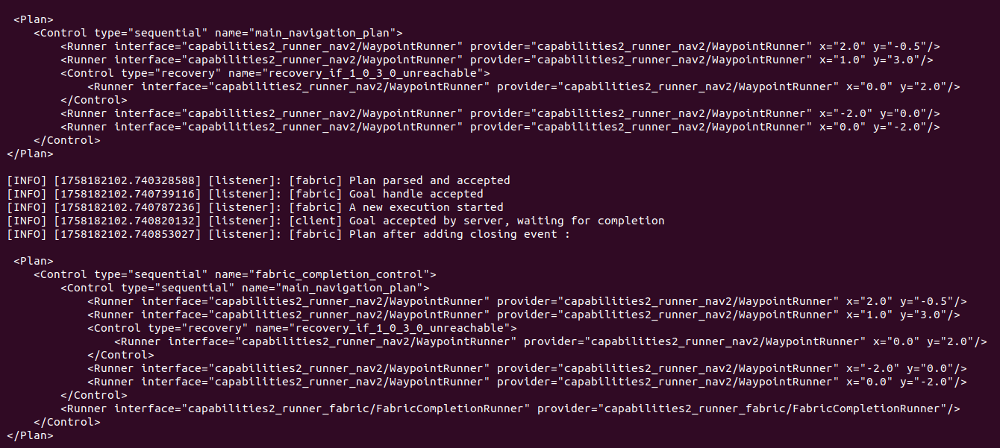
Task 4 highlights another failure-prone scenario, with the measured benchmark outcomes so the execution behavior and quantitative summary can be reviewed together.
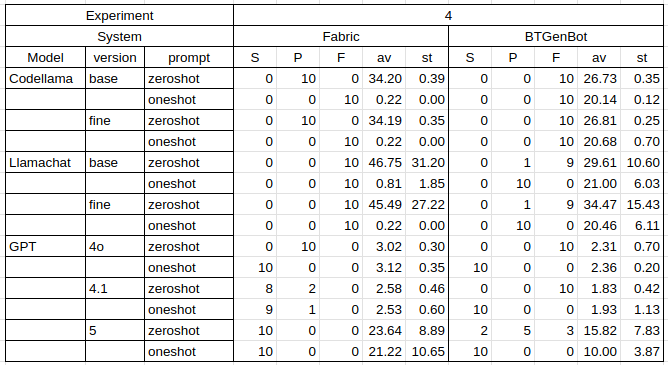
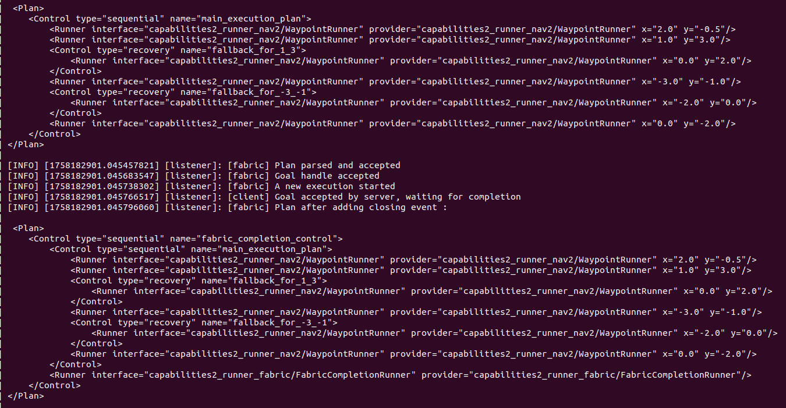
Task 5 highlights another failure-prone scenario, presents the final rollout together with its corresponding results table, summarizing performance differences across the evaluated model variants.
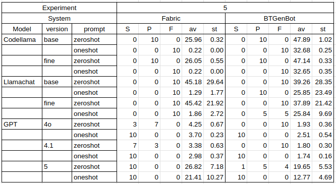
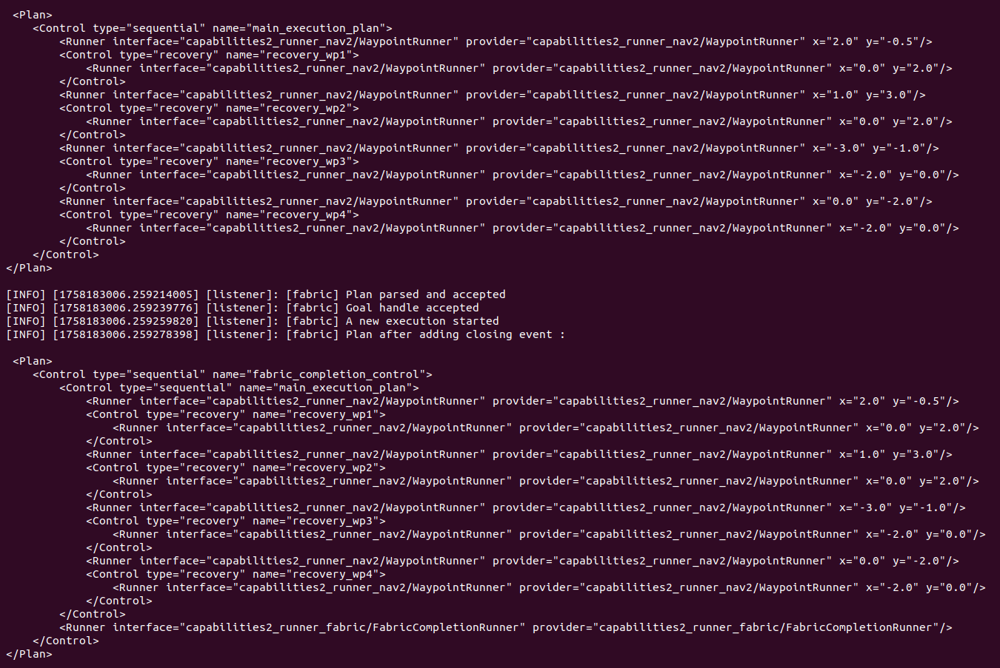
Experiment 2
BibTeX
@inproceedings{ratnayake2026gpsfsm,
title={A Generative Partially Specified Finite State Machine Approach to Complex Behaviour Planning},
author={Ratnayake, Kalana and Pritchard, Michael and Hinwood, David and Jayasuriya, Maleen and Herath, Damith},
booktitle={IEEE/RSJ International Conference on Intelligent Robots and Systems (IROS)},
year={2026},
url={https://github.com/CollaborativeRoboticsLab/gpsfsm-2026}
}